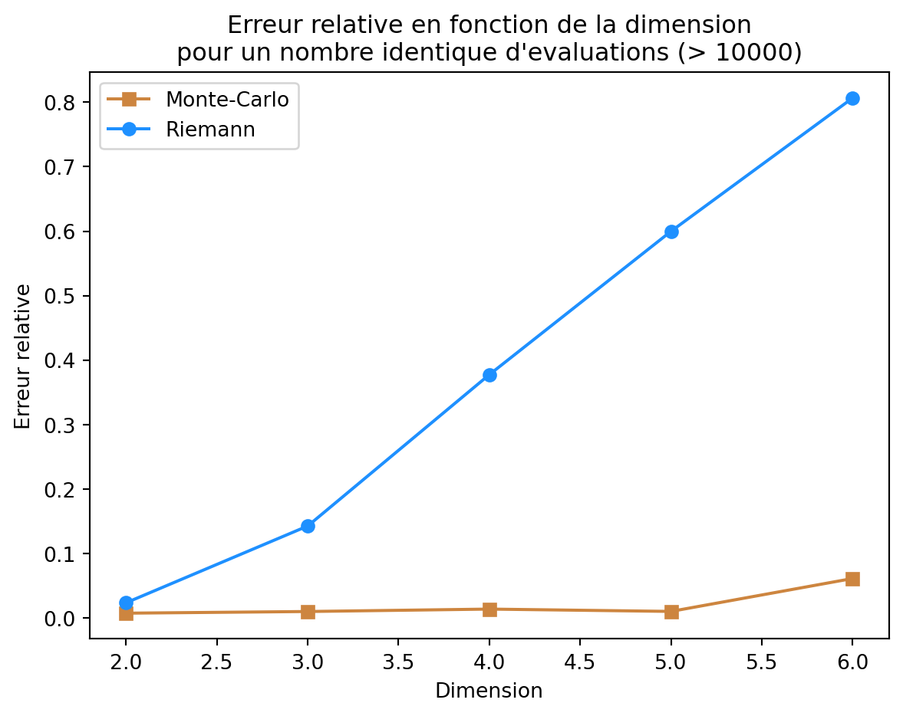

Implémenter des méthode de Mont-Carlo simple pour calculer des intégrales
Calculer des intervalles de confiances pour évaluer la précision des estimateurs
Approximation de \pi
Implémenter la méthode de Monte-Carlo pour le calcul approché de \pi via les deux intégrales suivantes :
pour X de loi uniforme sur [0,1]
I_1= 4 \cdot \int_0^1 \sqrt{1-x^2} dx=\pi=4 \cdot \mathbb{E}\left[\sqrt{1-X^2} \right],
La formule précédent s’obtient en faisant le changement de variable x=\sin(t).
pour (X,Y) de loi uniforme sur [-1,1]^2
I_2= \int_{\mathbb R^2} {1\hspace{-3.8pt} 1}_{\{ x^2+ y^2 \leq 1\}} dx dy=\pi=\mathbb{E}[4{1\hspace{-3.8pt} 1}_{\{X^2+Y^2\leq 1\}}].
Solution
import numpy as np# Define the number of pointsn =10000# Generate random numbers for X and Y in the range [-1, 1]x = np.random.uniform(-1, 1, n)y = np.random.uniform(-1, 1, n)# Calculate Z based on the condition (X^2 + Y^2 <= 1)z =4* (x**2+ y**2<=1)# Calculate the mean of Zin_ = np.mean(z)# Calculate the confidence interval (IC)q = stats.norm.ppf(0.975)delta = q * np.sqrt(np.var(z) / n)ic = (in_ - delta, in_ + delta)print("IN:", in_)print("Confidence Interval (IC):", ic)
La première méthode donne une meilleure précision. Mais est-ce si concluant. Il faut regarder plus en détail les variance pour conclure.
Loi de Cauchy
On souhaite estimer la probabilité qu’une variable aléatoire X \sim \text{Cauchy}(0, 1) soit plus grande que 2, i.e.,
I = \mathbb P(X\geq 2) = \int_2^\infty \left\{ \pi (1 + x^2) \right\}^{-1}
\text{d$x$} = - \frac{\arctan 2}{\pi} + \frac{1}{2}
Évaluer avec Python la valeur exacte de l’intégrale.
Solution
print(-np.arctan(2) / np.pi +1/2)
0.14758361765043326
Implémenter l’estimateur de Monte-Carlo simple à base de loi de Cauchy pour cette intégrale.
Solution
import numpy as np# Define the number of samplesN =10000# Generate samples from the Cauchy distributionX = np.random.standard_cauchy(N)# Calculate Y based on the condition (X >= 2)Y = (X >=2)# Calculate the mean of Yin_ = np.mean(Y)# Calculate the confidence interval (IC)q = stats.norm.ppf(0.975)delta = q * np.sqrt(np.var(Y) / n)ic = (in_ - delta, in_ + delta)print("IN:", in_)print("Confidence Interval (IC):", ic)
Implémenter l’estimateur de Monte-Carlo antithétique basé sur la symétrie de la loi de Cauchy.
Solution
import numpy as np# Define the number of samplesN =10000# Generate samples from the Cauchy distributionX = np.random.standard_cauchy(N)# Calculate Z based on the condition ((X >= 2) + (-X >= 2)) / 2Z = ((X >=2) + (-X >=2)) /2# Calculate the mean of Zin_ = np.mean(Z)# Calculate the confidence interval (IC)delta = q * np.sqrt(np.var(Z) / n)ic = (in_ - delta, in_ + delta)print("IN:", in_)print("Confidence Interval (IC):", ic)
L’intervalle de confiance est un peu plus resserré. La variance a été divisée par
np.var(Y) / np.var(Z)
np.float64(2.5111829146203672)
Implémenter l’estimateur de Monte-Carlo à base de loi uniforme sur [0,2] en utilisant la relation
I =
\frac{1}{2} - \mathbb{E}\left[ \frac{2}{\pi (1 + Y^2)} \right],
\quad Y {\sim} U[0,2].
Solution
import numpy as np# Define the number of samplesN =10000# Generate samples from the uniform distribution in the range [0, 2]U = np.random.uniform(0, 2, N)# Calculate A based on the given formulaA =1/2-2/ (np.pi * (1+ U**2))# Calculate the mean of Ain_ = np.mean(A)# Calculate the confidence interval (IC)q = stats.norm.ppf(0.975)delta = q * np.sqrt(np.var(A) / n)ic = (in_ - delta, in_ + delta)print("IN:", in_)print("Confidence Interval (IC):", ic)
L’intervalle de confiance est encore plus resserré. Par rapport à la méthode initiale, la variance a été divisée par
np.var(Y) / np.var(A)
np.float64(4.553067405408691)
Implémenter l’estimateur de Monte-Carlo à base de loi uniforme sur [0,1/2] en utilisant la relation
I =
\mathbb{E}\left[\frac{1}{2\pi (1 + Z^2)} \right],
\quad Z {\sim} U[0,1/2].
Solution
import numpy as np# Define the number of samplesN =10000# Generate samples from the uniform distribution in the range [0, 1/2]U = np.random.uniform(0, 0.5, N)# Calculate B based on the given formulaB =1/ (2* np.pi * (1+ U**2))# Calculate the mean of Bin_ = np.mean(B)q = stats.norm.ppf(0.975)delta = q * np.sqrt(np.var(B) / n)ic = (in_ - delta, in_ + delta)# Calculate the confidence interval (IC)print("IN:", in_)print("Confidence Interval (IC):", ic)
L’intervalle de confiance est encore plus resserré, on arrive presque à une précision de 10^{-3}. Par rapport à la méthode initiale, la variance a été divisée par
np.var(Y) / np.var(B)
np.float64(1363.5036086845028)
Quelle méthode d’estimation est la plus précise ?
Solution
Celle qui a la plus petite variance, donc la dernière.
Aiguilles de Buffon
Implémentez l’estimateur Monte-Carlo de \pi de la méthode de Buffon :
\pi^{-1} = \frac{1}{2 }\mathbb{E}[{1\hspace{-3.8pt} 1}_{\cos\Theta \geq 2 X}],
avec (X,\Theta)\sim U([0,1/2]\times[-\pi/2,\pi/2]).
Solution
import numpy as npdef calculate_statistics(n):# Generate samples for x and th x = np.random.uniform(0, 0.5, n) th = np.random.uniform(-np.pi/2, np.pi/2, n)# Calculate y based on the given condition y = (np.cos(th) >=2* x) /2# Calculate the mean of y in_ = np.mean(y) q = stats.norm.ppf(0.975)# Calculate the confidence interval (ic) for in_ delta = q * np.sqrt(np.var(y) / n) ic = (in_ - delta, in_ + delta)# Calculate pichap pichap =1/ in_# Calculate icchap icchap = (1/ ic[1], 1/ ic[0])return in_, ic, pichap, icchapN =10000IN, IC, pichap, ICchap = calculate_statistics(N)print("IN:", IN)print("Confidence Interval (IC) for IN:", IC)print("pichap:", pichap)print("Confidence Interval (IC) for pichap:", ICchap)
IN: 0.3145
Confidence Interval (IC) for IN: (np.float64(0.3097659768987193), np.float64(0.3192340231012807))
pichap: 3.179650238473768
Confidence Interval (IC) for pichap: (np.float64(3.132498191405928), np.float64(3.228243495336993))
Combien de tirages sont nécessaire pour obtenir une précision de 10^{-2} avec 95\% de certitude ?
Solution
# Generate n values logarithmically spaced from 1e5 to 1e8n_values = np.logspace(5, 8, num=10, dtype=int)# Evaluate the function for each value of nresults = [calculate_statistics(n) for n in n_values]# Print the resultsfor n, (IN, IC, pichap, ICchap) inzip(n_values, results):print(f"n: {n:09d}, IN: {IN:.3f}, IC: ({IC[0]:.3f}, {IC[1]:.3f}), pichap: {pichap:.3f}, ICchap: ({ICchap[0]:.3f}, {ICchap[1]:.3f})")
Il faut de l’ordre d’un peu moins de 10^8 tirages.
Probabilités de dépassement d’une loi normale
Soit Z \sim N(0,1). Nous souhaitons évaluer la probabilité I = \mathbb P(Z >4.5).
Implémentez la méthode de Monte-Carlo standard pour ce calcul. Que constatez-vous ? Pourquoi ?
Solution
Commençons avec un petit nombre de simulations
import numpy as np# Define the number of samplesN =10000# Generate samples from the normal distribution with mean 0 and standard deviation 1X = np.random.normal(0, 1, N)# Calculate Y based on the condition (X > 4.5)Y = (X >4.5)# Calculate the mean of Yin_ = np.mean(Y)# Calculate the confidence interval (ic) for in_q = stats.norm.ppf(0.975)delta = q * np.sqrt(np.var(Y) / n)ic = (in_ - delta, in_ + delta)print("IC:", in_)print("Confidence Interval (IC) for IN:", ic)
IC: 0.0
Confidence Interval (IC) for IN: (np.float64(0.0), np.float64(0.0))
On obtient une estimation à 0, ce qui n’est pas surprenant car on cherche la probabilité d’un événement rare
L’objectif de cet exercice est d’illustrer la difficulté de l’estimation de volumes en grande dimension, notamment par la méthode de Riemann.
On note B_d=\{x\in \mathbb R^d, \sum_{i=1}^d x_i^2 \leq 1\} la boule unité en dimension d et V_d son volume. Pour rappel un calcul exact donne V_d = \frac{\pi^{d/2}}{\Gamma(d/2+1)}. En notant f(\cdot) = {1\hspace{-3.8pt} 1}_{B_d}(\cdot) on peut donc écrire V_d = \int_{\mathbb{R}^d} f(x)dx.
On va dans la suite estimer V_d pour des valeurs de d allant de 2 à 10.
Implémentez la méthode de Riemann pour approcher V_d pour d=2,\dots, 10 par \widehat{V}_d^{\mathrm{Riemann}}.
import numpy as npfrom scipy import statsfrom scipy.special import gammadef f(x):return np.sum(x**2) <=1def true_volume(d):return np.pi**(d/2) / gamma(d/2+1)def riemann(n, d): n_discr =int(n**(1/d)) n_eff = n_discr**d x = np.linspace(-1, 1, n_discr)# Grille regulière sur [-1, 1]^d: X = np.array(np.meshgrid(*[x]*d)).reshape(d, -1).T Y = np.array([f(x) for x in X]) *1.0 d_vol = (2/ n_discr)**dreturn np.sum(Y) * d_vol, n_eff, X
Implémentez la méthode de Monte-Carlo standard pour ce même calcul pour approcher V_d par \widehat{V}_d^{\mathrm{Monte-Carlo}}. Visualizer l’erreur relative des deux méthodes en fonction de d (pour un nombre d’évaluation de f identique, et supérieur à 10000. Que constatez-vous ? Pourquoi ? Pour rappel l’erreur relative d’un estimateur \widehat{V}_d de V_d est donnée par |\widehat{V}_d - V_d|/V_d.
Solution
import matplotlib.pyplot as pltn =10000d_max =7dimensions =range(2, d_max)rel_err_mcs = []rel_err_rs = []for d in dimensions: in_r, n_eff, _ = riemann(n, d) in_mc, _, _ = montecarlo(n_eff, d) true_vol = true_volume(d) rel_err_mcs.append(np.abs(in_mc - true_vol) / true_vol) rel_err_rs.append(np.abs(in_r - true_vol) / true_vol)plt.plot(dimensions, rel_err_mcs, marker="s", label="Monte-Carlo", color='peru')plt.plot(dimensions, rel_err_rs, marker="o", label="Riemann", color='dodgerblue')plt.xlabel("Dimension")plt.ylabel("Erreur relative")plt.title(f"Erreur relative en fonction de la dimension\npour un nombre identique d'evaluations (> {n})")plt.legend()plt.show()

Quelle méthode est la plus précise ? Pourquoi ? On pourra visualiser la norme des échantillons de la méthode de Monte-Carlo pour différentes dimensions de ceux de la méthode de Riemann.
Une limite des deux méthodes est la dimension. Regardons ce que donne la méthode de Riemann quand d varie.
Notons a=(a_1,\dots,a_d)^\top et b=(b_1,\dots,b_d)^\top deux points de \mathbb{R}^d. Tout d’abord supposons que donnons nous une fonction f:\mathbb{R}^d \to \mathbb{R}, et un hyper-rectangle \Omega=\prod_{j=1}^d [a_j, b_j] (avec b_j>a_j pour tout j\in\llbracket 1, d\rrbracket)sur lequel on veut calculer l’intégrale de f. Ainsi l’objectif est de calculer \int_{\Omega} f(x)dx.
Nous rajoutons l’hypothèse suivante: f est Lipschitzienne sur \Omega de constante L_{f} pour la norme \|\cdot\|_{\infty} (le max des amplitudes des coefficients), ainsi il existe L_f tel que pour
Pour cela on discrétise l’hyper-rectangle \Omega en m sous-intervalles de taille (b_i-a_i)/m pour i=1,\dots,d, ce qui forme une partition de n=m^d hyper-rectangles de \Omega:
\Omega_{i_1,\dots,i_d} = \prod_{j=1}^d \left[a_j + \tfrac{i_j-1}{m}(b_j-a_j), a_j + \tfrac{i_j}{m}(b_j-a_j)\right].
et on a alors la partition:
\Omega = \bigcup_{i_1=1}^m \cdots \bigcup_{i_d=1}^m \Omega_{i_1,\dots,i_d}.
Pour simplifier on note
\mathrm{Vol}(\Omega_{i_1,\dots,i_d}) = \left(\tfrac{b_1-a_1}{m}\right) \cdots \left(\tfrac{b_d-a_d}{m}\right)= \frac{1}{m^d}\prod_{j=1}^d (b_{i_j}-a_{i_j}) \enspace.
Pour tout i_1,\dots,i_d, on note \omega_{i_1,\dots,i_d} un point de \Omega_{i_1,\dots,i_d} (par exemple son centre, ou par simplicité le point “en bas à gauche de chaque hyper-rectangle”).
L’estimateur de l’intégrale de f sur \Omega par la méthode de Riemann est alors:
\widehat{I}^{\mathrm{R}} = \sum_{i_1=1}^m \cdots \sum_{i_d=1}^m f(\omega_{i_1,\dots,i_d}) \mathrm{Vol}(\Omega_{i_1,\dots,i_d}) \enspace,
qui requiert n=m^d évaluations de f.
Notons E l’erreur de la méthode de Riemann, est donnée par E^R = |\int_{\Omega} f(x)dx - \widehat{I}^{\mathrm{R}}|, et on alors:
Pour x\in \Omega_{i_1,\dots,i_d}, alors \|x-\omega_{i_1,\dots,i_d}\|_{\infty} \leq \max_{j = 1,\dots, d}\tfrac{b_j-a_j}{m}=\tfrac{1}{m}\|b-a\|_{\infty}, et donc:
Ainsi pour atteindre un niveau de précision \epsilon, il faut n tel que:
n \geq \left(\frac{L_f\mathrm{Vol}(\Omega)\|b-a\|_{\infty}}{\epsilon}\right)^d \enspace.
Concernant la méthode de Monte-Carlo l’estimateur est donnée par:
\widehat{I}^{\mathrm{MC}} = \frac{1}{n}\sum_{i=1}^n f(X_i) \enspace,
et le théorème centrale limite assure que
\sqrt{n}\left(\widehat{I}^{\mathrm{MC}} - \int_{\Omega} f(x)dx\right) \overset{d}{\longrightarrow} \mathcal{N}(0, \mathrm{Var}(f(X))) \enspace.
Cela donne donc une erreur de l’ordre de \frac{1}{\sqrt{n}} pour la méthode de Monte-Carlo.
On peut confirmer ces vitesses d’approximation en regardant les erreurs relatives en fonction du nombre d’évaluations pour d=4, pour la fonction indicatrice de la boule unité:
Notons que la vitesse d’approximation prévue par la théorie est conforme à ce que l’on observe même si la fonction indicatrice de la boule unité n’est pas Lipschitzienne.